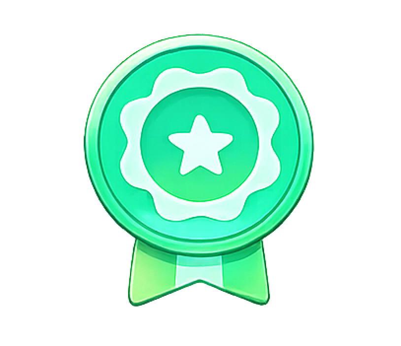
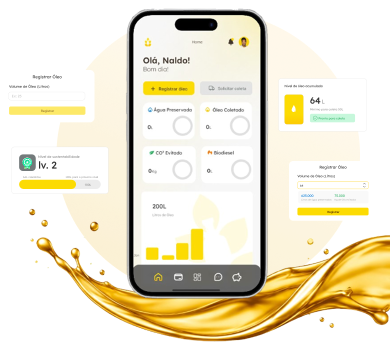
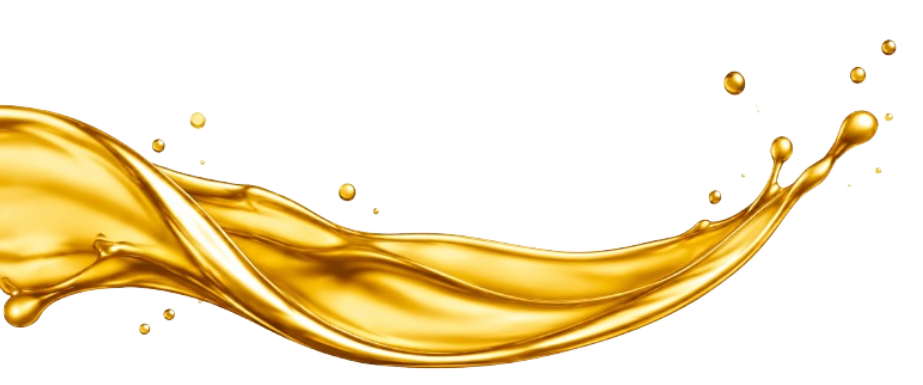

Biodiesel
O óleo é processado e transformado em combustível renovável, menos poluente e mais sustentável.
 Olius
Olius
Conectamos empresas, cidadãos e pontos de coleta para tornar o descarte de óleo de cozinha mais simples, eficiente e sustentável.
Transformado em biodiesel e outros produtos
Acompanhe seus indicadores ambientais em tempo real
Do descarte à destinação final, tudo rastreado.


1 litro de óleo pode poluir até 25 mil litros de água.
Rotas inteligentes geram economia e menos emissão de poluentes.

Mais sustentabilidade, conscientização e futuro.
Cadastre seu estabelecimento ou ponto de coleta.
Informe a quantidade de óleo acumulado.
Receba a previsão ideal de coleta.
Agende a coleta de forma prática.
Acompanhe o impacto e faça diferença.
Resultados que mostram a força da sua atitude


Solução completa para negócios que querem ser mais sustentáveis
 Gestão de coleta otimizada
Redução de custos logísticos
Relatórios de impacto ambiental
Certificação de sustentabilidade
Gestão de coleta otimizada
Redução de custos logísticos
Relatórios de impacto ambiental
Certificação de sustentabilidade

Descarte correto, fácil e perto de você. Pequenas atitudes, grandes mudanças.
Encontre pontos de entrega
Acompanhe seu impacto
Participe de um movimento sustentável

Descubra o local mais próximo e agende sua coleta de forma rápida e simples.


Após o descarte correto, o óleo usado se transforma em novos recursos que geram impacto positivo
O óleo é processado e transformado em combustível renovável, menos poluente e mais sustentável.
Usado na fabricação de sabões e produtos de limpeza, ajudando a reduzir o impacto ambiental.
O óleo pode virar matéria-prima para velas artesanais e produtos para uso doméstico.

Também pode ser utilizado na produção de lubrificantes e outros produtos industriais.
Nosso aplicativo facilita todo o processo e mostra o impacto positivo que você gera a cada coleta.
Agende coletas
Veja seu impacto em tempo real
Encontre pontos de coleta
Receba notificações
Ganhe pontos e suba de nível

Nossa tecnologia oferece praticidade, segurança e impacto positivo para você e para o planeta.
Agende coletas de forma simples e rápida, quando e onde precisar.
Cada litro de óleo coletado evita a poluição de milhares de litros de água.

Acompanhe suas coletas e impacto ambiental em uma dashboard intuitiva.
Receba certificados que comprovam sua contribuição para o meio ambiente.
Reduza custos operacionais e contribua para um futuro mais sustentável.
Conectamos empresas e coletores para um ciclo sustentável e colaborativo.

Seguimos padrões rigorosos para garantir segurança, qualidade e um impacto real no meio ambiente.
Consumo e Produção Responsáveis

Operação alinhada à redução de emissões
Processos rastreáveis e ambientalmente responsáveis

Conformidade com normas ambientais e de segurança
A plataforma disponibiliza um certificado de destinação correta para empresas e parceiros que realizam o descarte por meio da plataforma. O documento comprova que o óleo foi encaminhado para a destinação adequada e pode ser utilizado como registro de responsabilidade ambiental.
Após realizar o descarte ou a coleta, os dados são registrados no aplicativo. O usuário pode acompanhar informações como quantidade de óleo destinada corretamente, estimativa de impacto ambiental evitado e sua contribuição para a reciclagem, por meio de um painel atualizado conforme os registros são realizados.
A Olius possui um sistema de benefícios baseado na participação do usuário. Conforme a quantidade de óleo destinada corretamente e a frequência de participação aumentam, o usuário pode avançar entre níveis, como Bronze, Prata e Ouro, desbloqueando benefícios e reconhecimentos dentro da plataforma.
Após pesquisas, estabelecemos uma quantidade mínima de 20 litros para solicitar uma coleta corporativa. Quantidades menores podem ser direcionadas aos pontos de coleta parceiros, tornando a logística mais eficiente.
Para o cadastro de um coletor parceiro, podem ser solicitados documentos que comprovem sua identidade e regularidade, como documento de identificação, CPF/CNPJ, comprovante de endereço e documentos ou autorizações relacionados à atividade de coleta, quando aplicáveis. A documentação pode variar conforme o tipo de coletor e a legislação.
Espere o óleo esfriar completamente e armazene-o em garrafas PET limpas e secas, fechando bem a tampa para evitar vazamentos até o momento da entrega ou coleta.
Transforme o descarte de óleo em impacto positivo para o meio ambiente, sua comunidade e o futuro.